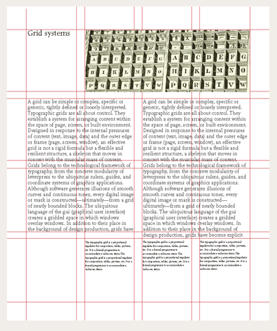

Design & Presentation
Design principles II
1. Typography
2. Layout
3. Color
Typography
Fonts and how to use them
Type classification
 Via The Non-Designer's Design Book
Via The Non-Designer's Design Book
 Via The Non-Designer's Design Book
Via The Non-Designer's Design Book
Type
families
So you want to emphasize?
Use italics to differentiate
Or weighting to make it bold
Maybe even underline
But pick one! Avoid sending mixed signals!!
Heads & bodies
This is my headline
My body text is the same font, but in a very different weight and size to help differentiate it.
Looks nice and clean, wouldn't you say?
This is my other headline
But we can also have our body text be from a different type family than our headers to create clear visual distinctions between content types.
Mixing
typefaces
Guiding principle:
Typographic contrast
Guiding principle:
Typographic contrast
 Via The Non-Designer's Design Book
Via The Non-Designer's Design Book
 Via The Non-Designer's Design Book
Via The Non-Designer's Design Book
Layout
Making the grid work for you
Single-column
Multi-column
Modular
 Via Thinking With TypeGuiding principle:
Organizing space
Layout tip:
Don't let your text run too wide – or too narrow
(A.K.A. The Goldilocks principle of line-length)
Too narrow
A sentence that is in a column that's too narrow becomes hard to read, don't you think?
Too wide
A sentence that's in a column that's too wide just keeps going and going and loses readers' attention. (It's hard work to read this!)
Just right
A line should hold 45-75 characters (counting both letters and spaces). 66 characters is ideal!
Online, optimal width varies by font-size.
Color
Using color effectively in design
The color wheel
Primary
Secondary
Tertiary
Color
relationships
1. Complementary
 Via The Non-Designer's Design Book
Via The Non-Designer's Design Book
2. Analogous
 Via The Non-Designer's Design Book
Via The Non-Designer's Design Book
Hue v. Shade v. Tint
 Via The Non-Designer's Design Book
Via The Non-Designer's Design Book
Hue =
Pure color
Shade =
Add black
Tint =
Add white
CMYK v. RGB
CMYK = Cyan, Magenta, Yellow, Key (black)
• Works like paint (additive)
• Used for print
RGB = Red, Green, Blue
• Works like light (subtractive)
• Used for the web